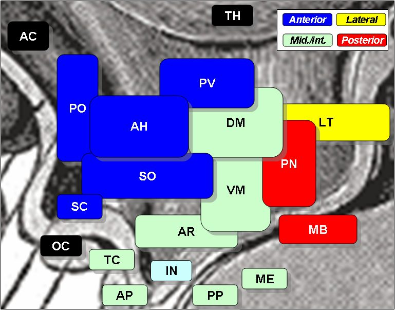

En el centro del cerebro
El diencéfalo está en el centro del cerebro, entre los hemisferios y el tronco del encéfalo, alrededor del tercer ventrículo. Sus dos estructuras principales son el tálamo y el hipotálamo: el primero, una gran estación de relevo; el segundo, el centro de control del medio interno del cuerpo.
El tálamo
Son dos masas ovaladas, del tamaño de una nuez cada una, a ambos lados del tercer ventrículo. Se le llama la «puerta de entrada a la corteza»:
- Relevo sensorial: casi toda la información de los sentidos (vista, oído, tacto, gusto, dolor) pasa por el tálamo antes de llegar a la corteza. Solo el olfato va directo.
- Filtro: selecciona qué información llega a la consciencia y cuál se descarta. Por eso podemos concentrarnos en una conversación en un sitio ruidoso.
- Movimiento: forma parte de los circuitos de los ganglios basales y el cerebelo.
- Despertar y consciencia: participa en el ciclo de sueño y vigilia.
- Memoria y emociones, a través de sus conexiones con el sistema límbico.
Si se lesiona
Un pequeño ictus del tálamo produce pérdida de sensibilidad de medio cuerpo. A veces, semanas después, aparece un dolor talámico intenso y quemante (síndrome de Dejerine-Roussy), un tipo de dolor neuropático central. Las lesiones de ambos tálamos pueden causar somnolencia, trastornos de memoria o coma. El tálamo también es una diana de la estimulación cerebral profunda en el temblor y la epilepsia.
El hipotálamo


El hipotálamo, debajo del tálamo, pesa apenas 4 gramos, menos del 1 % del cerebro, pero controla funciones esenciales para la vida. Es el enlace entre el sistema nervioso y el hormonal:
| Función | Cómo lo hace |
|---|---|
| Temperatura | Actúa como termostato: provoca sudor o tiritona; la fiebre «sube» su punto de ajuste |
| Hambre y saciedad | Responde a hormonas como la leptina y la grelina |
| Sed y agua | Libera la hormona antidiurética, que hace que el riñón retenga agua |
| Ritmos circadianos | El núcleo supraquiasmático es el reloj biológico, ajustado por la luz |
| Sueño y vigilia | Neuronas de orexina, cuya pérdida causa la narcolepsia |
| Hormonas | Controla la hipófisis: crecimiento, tiroides, suprarrenales, reproducción, lactancia |
| Estrés | Inicia la respuesta de cortisol; ver estrés y cerebro |
| Sistema nervioso autónomo | Coordina la respuesta del corazón, los vasos y las vísceras |
| Conductas básicas | Reproducción, agresión, miedo, junto al sistema límbico |
La oxitocina, que se libera en el parto, la lactancia y las relaciones afectivas, se fabrica en el hipotálamo.
Si se lesiona
Tumores (craneofaringioma, adenomas de hipófisis grandes), traumatismos, la cirugía o enfermedades inflamatorias pueden alterar el hipotálamo y causar obesidad o adelgazamiento extremo, alteraciones de la temperatura, sed excesiva y orina abundante (diabetes insípida), trastornos del sueño o alteraciones hormonales.
Fuentes
- Sherman SM, Guillery RW. Functional Connections of Cortical Areas: A New View from the Thalamus. MIT Press; 2013.
- Saper CB, Lowell BB. The hypothalamus. Curr Biol. 2014;24:R1111-6.
- Thannickal TC, et al. Reduced number of hypocretin neurons in human narcolepsy. Neuron. 2000;27:469-74.
- Blumenfeld H. Neuroanatomy through Clinical Cases. 3.ª ed. Sinauer; 2021.